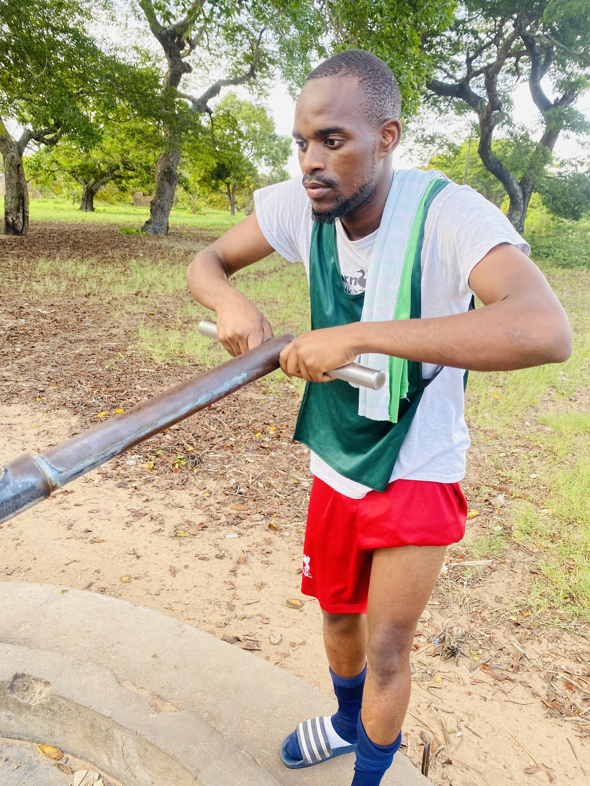
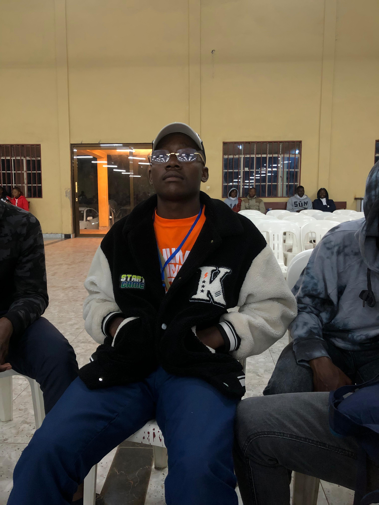

Testemunhos
O que os participantes dizem sobre o Acampamento SEKELEKA UFAMBA
Testemunhos dos Participantes
O que mais marcou
O conjunto dos momentos de oração, louvor, partilha e as rodas que fazíamos diariamente. Senti Deus falar profundamente comigo.
Contributo espiritual e social
Ajudou-me a aproximar-me mais de Deus, a fortalecer a minha fé e a construir amizades que jamais imaginaria.
Expectativas para o RHUMA MINA
Espero que seja ainda mais profundo e transformador. Quero viver momentos genuínos na presença de Deus e crescer espiritualmente.
Por que recomenda
É uma oportunidade de parar, afastar-se das distrações, aproximar-se de Deus e descobrir o propósito que Ele tem para a sua vida.

O que mais marcou
A Noite da Fogueira, onde ouvi testemunhos e percebi que cada pessoa carrega consigo uma história e uma batalha.
Contributo espiritual e social
Espiritualmente edifiquei-me através dos estudos e pregações. Socialmente conheci irmãos incríveis que até hoje trocamos conversas produtivas.
Expectativas para o RHUMA MINA
Espero fortalecer-me ainda na fé e criar intercâmbio com os jovens presentes no acampamento.
Por que recomenda
Porque cada momento no acampamento é uma maravilha e fortalecemos cada vez mais quando estamos unidos.

O que mais marcou
O evangelismo, onde sentimos a necessidade de ajudar a família não só com a palavra, mas também com algo para comer. O evangelho não se trata somente de falar de Jesus, mas também de mostrar e dar o amor de Jesus.
Contributo espiritual e social
O acampamento contribuiu de uma forma muito forte para a minha vida espiritual e social.
Expectativas para o RHUMA MINA
Conviver com a comunidade e testemunhar as maravilhas de Deus. Que não seja nenhum passeio, mas sim uma experiência única.
Por que recomenda
Será um acampamento incrível e abençoado. Vamos adorar, louvar, dançar, aprender, falar com Deus e muito mais!
O que mais marcou
A conversa na fogueira com muita troca de experiências, os jogos aleatórios com irmãos e arrancar frutas.
Contributo espiritual e social
Solidifiquei conhecimentos envolvidos na área económica e sentimental.
Expectativas para o RHUMA MINA
Não muito boas por ser um lugar perto. Tenho receio de muitas indisciplinas, dado que não teremos o mesmo isolamento geográfico que em Gaza.
O que mais marcou
Os debates, principalmente a conversa que as mulheres tiveram com o pastor Eduardo Nhanchote. Pude aprender muito com os conselhos e ensinamentos que ele deu.
Contributo espiritual e social
Contribuiu muito na minha vida social. Antes do acampamento eu era muito mais reservada e não gostava de fazer amizades. Também fortaleceu muito a minha relação com Deus.
Expectativas para o RHUMA MINA
As minhas expectativas são enormes e espero que supere o SEKELEKA UFAMBA. Não vejo a hora de chegar!
Por que recomenda
Porque é onde os jovens aprendemos sobre Deus, aprendemos com o testemunho de outros jovens, sobre a igreja do nazareno e muita alegria e descontração.
O que mais marcou
O momento que tivemos com o pastor Tivane.
Contributo espiritual e social
Contribuiu de várias formas, indicando os estados.
Expectativas para o RHUMA MINA
Temas sem tabus. Estudos que vão acrescentar na vida de cada jovem, incentivar o jovem a estudar, trabalhar, empreender, etc.
Por que recomenda
Além do crescimento espiritual, ajudará cada um a descobrir o seu potencial. Será bom que cada jovem saiba que não é o único a passar por batalhas e dificuldades da vida.